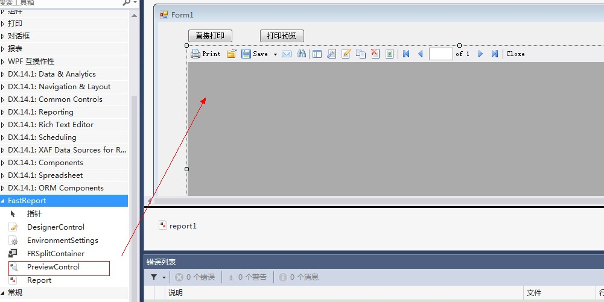
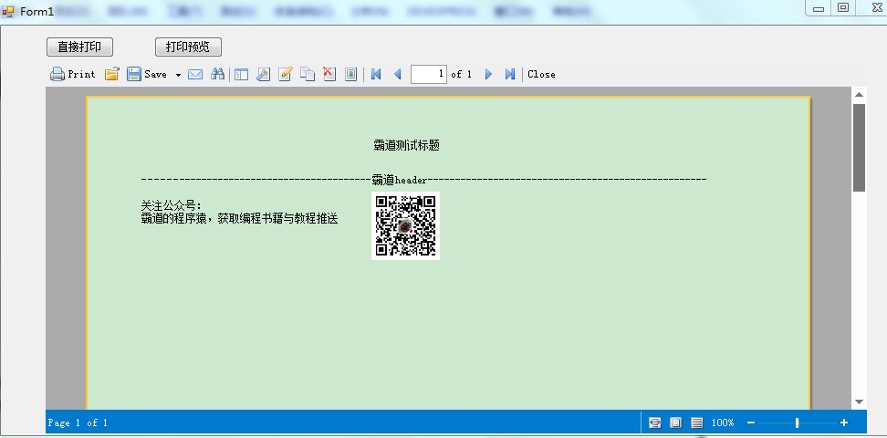

原文出处:本文由博客园博主霸道流氓提供。
原文连接:https://www.cnblogs.com/badaoliumangqizhi/p/11533835.html
原文连接:https://www.cnblogs.com/badaoliumangqizhi/p/11533835.html
场景
Winform中使用FastReport实现简单的自定义PDF导出：
https://blog.csdn.net/BADAO_LIUMANG_QIZHI/article/details/100920681
在上面已经实现自定义PDF并导出的基础上，实现导出或者打印前的预览。
实现
在窗体中拖拽一个FastReport的PreviewControl控件，以及Buton按钮。

然后在Button按钮的点击事件中
private void button2_Click(object sender, EventArgs e)
{
this.report1 = new FastReport.Report();
string baseDir = System.Windows.Forms.Application.StartupPath;
var reportFile = Path.Combine(baseDir, "1.frx");
this.report1.Load(reportFile);
this.report1.Preview = this.previewControl1;
report1.Prepare();
report1.ShowPrepared();
}
运行效果
